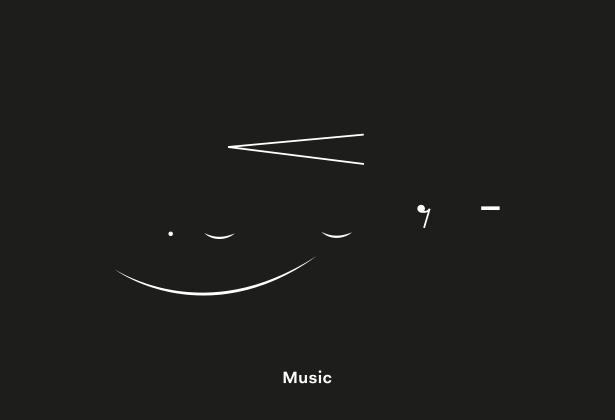

"That music must be heard is not essential - what it sounds like may not be what it is."
"I want everything I do to be presented in an art context."— Kanye West
Dates: November 2016 - March 2018
Website: www.kunsthalleformusic.org
Subject Line: FOUNDING OF THE KUNSTHALLE FOR MUSIC
Image by: Ari Benjamin Meyers / APFEL (A Practice for Everyday Life)
Music is not necessarily what you think it is.
Can we imagine a space for music that exists outside of any media and beyond the stage? A space for unrecordable music, music of undefined duration, existing even when no audience is present? A dissolution of performer and audience, of rehearsal and performance? A music existing in the world based in a space of musical action and activity, production and performance that can be entered into and exited from at will. A space wherein the ideal listening and viewing position is determined independently by each artist, performer or visitor, not determined beforehand by a seat number on a ticket. Having an ensemble at the center of its activity carrying out or otherwise enacting the work which continues during the opening hours whether there are visitors present or not.
Music today is encountered primarily as that which we consume, through a remove, usually neatly pre-packaged, either as a recording or on a stage. And yet throughout most of its history, to experience music one had to perform it. Music was by definition: live, social and spatial. In other words also: messy, political, meta-temporal. Music was not merely in space; it was space. Music was not only social through listening; it was social in its conception. Music didn’t happen in time; it defined time.
Music is not necessarily what you think it is.
Music is inherently not about perfection or reproducibility. Music is the act of an orchestra rehearsing. Music is “John Baldessari Sings Sol LeWitt”. Music is a group of people becoming a choir, or a band, whether they perform publically or not. Music is two strangers singing a duet.
In short, can we imagine contemporary music, composition, music performance as contemporary art? When did we forget that music - compositional strategies, formal structures, harmony and dissonance, orchestration, scoring, arrangement, rhythm, tempo - is at the base of it all? Music traditionally had been a driver of the contemporary; all the more striking then the situation wherein music qua music has mostly separated itself and been separated from what is considered to be contemporary art. It is in this schism that the Kunsthalle for Music operates.
So what, in this sense, would be the institution for music inside and alongside the contemporary art institution? What would be its repertoire? What kind of a school and educational attitudes would it have at its heart? How would it contemplate the state of musicians and music today? Would its ensemble include musicians and non-musicians alike? Would it have a collection, and if so how would music works enter into the market in the first place? What kind of a mythical new audience would it desire?
Artistic Director: Ari Benjamin Meyers
Founding Directors: Ari Benjamin Meyers, Defne Ayas, Mimi Brown
Team: Natasha Hoare, Christina Li, Anja Lindner, Samuel Saelemakers
Design: APFEL (A Practice for Everyday Life)
The Kunsthalle for Music is commissioned by Witte de With Center for Contemporary Art together with Spring Workshop. The Kunsthalle for Music will make appearances throughout 2017 and 2018 from Hong Kong to Rotterdam, to San Francisco, Paris and Munich. An exposition, not an exhibition by Ari Benjamin Meyers will unfold the Kunsthalle’s foundational themes at Spring Workshop (March 2017), followed by a congress at Witte de With (May 2017) and punctuated by an inaugural take-over, featuring a series of new commissions also at Witte de With (January 2018).
For inquiries and schedule of activities, as well as more information on the ensemble and repertoire, please write to: contact@kunsthalleformusic.org